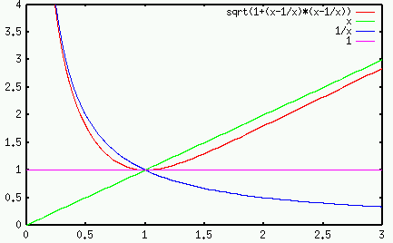
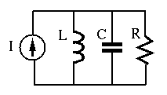

If only the steady state response of a second order system is of interest,
then we can ignore the homogeneous solution due to the initial condition
and consider only the particular solution due to the input. To do so, we
convert the 2nd order DE into an algebraic equation in terms of the
impedances of the components. In the following, we consider first the
series system and then the parallel system.
Series system: The overall impedance of the three elements is
where

The impedance
as a function of frequency  is
plotted below:
is
plotted below:

In particular, when
, i.e., the frequency
is the same as the natural frequency,
the impedances of the capacitor and the inductor have the same magnitude
but opposite phase, and their sum is zero:
In this case, the RLC circuit is said to be in resonance, with
the total impedance
 minimized and the current
maximized. Also, as the total impedance
has a zero phase angle
, the current and
voltage
minimized and the current
maximized. Also, as the total impedance
has a zero phase angle
, the current and
voltage  are in phase.
are in phase.
The quality factor of this series RCL 2nd order system is defined as
Consider the voltages across the three components at
natural when
 :
:
We see that
- The voltage across
 is equal to the source voltage
is equal to the source voltage
- The voltages across
 and
and  have the same magnitude, which
is
have the same magnitude, which
is  times the input voltage
times the input voltage
- The voltage across and have opposite phases:
.
We see that
, i.e.,  and
and  have
opposite polarities and they cancel each other.
have
opposite polarities and they cancel each other.
Example: In a series RLC circuit, , and
. The natural frequency  can be found to be
.
The quality factor is
can be found to be
.
The quality factor is
or
If the input voltage is
at the natural frequency, the current
is
, and the voltages across each of the elements are:
Note that although input voltage is , the voltage across L and C ( times the input) could be very high, but they are in opposite phase and
therefore cancel each other).
times the input) could be very high, but they are in opposite phase and
therefore cancel each other).
Parallel system:

The overall admittance of the three elements in parallel is
where
In particular when
, we have
, and the total admittance is minimized
(impedance is maximized):
and the voltage
is maximized. Also, as
, the voltage and current are in phase.
The quality factor of this parallel RCL 2nd order system is
defined as
We note that of the parallel RCL circuit is the reciprocal of of
the series RCL circuit:
When
, the voltage is
and the currents through the three components are:
We see that
- The current through is equal to the source current:
;
- The currents through and have the same magnitude,
which is times the input current:

- The currents through and have opposite phases:
.
We see that
, i.e.,  and
and  have
opposite directions, they form a loop current through and .
have
opposite directions, they form a loop current through and .
The quality factor can also be used to judge whether a second order system
is under, critically or over damped. Qualitatively, a greater or a smaller
 indicates that the system is energetic, active, and responsive, while
on the other hand, a smaller or a greater indicates that the
system is sluggish, inactive, and irresponsive.
indicates that the system is energetic, active, and responsive, while
on the other hand, a smaller or a greater indicates that the
system is sluggish, inactive, and irresponsive.
The concept of the quality factor of a second order RCL circuit
can be generalized to describe any second or higher order system,
as the ratio between the energy stored in the system and the energy
dissipated by the system:
In the case of the series RCL circuit, this is the ratio between
the energy stored in and (proportional to and
) and the energy dissipated by (proportional to
) per period
at the natural frequency
. Consider the maximum energy stored
in :
and the maximum energy stored in :
 |
(199) |
where
is the peak current through , and
 is the peak voltage across .
is the peak voltage across .
At the natural frequency
 ,
,
 ,
, and the capacitor and the inductor store the same
amount of energy:
,
, and the capacitor and the inductor store the same
amount of energy:
The energy is converted back and forth between magnetic
energy in and electrical energy in . The energy dissipated
in per cycle
is:
Substituting and into the definition of the quality
factor, we get
which is the same as the previously defined.
The quality factor and the damping coefficient are inversely
related to each other:
The phenomenon of resonance is of great importance in many physical
systems such as mechanical structures and electrical circuits. One
well known example of resonance causing damage in mechanical
structures is the
Broughton_Suspension_Bridge.
On the other hand, resonance plays an important role in tuning
circuits in radio and TV reception, as we will discuss later.